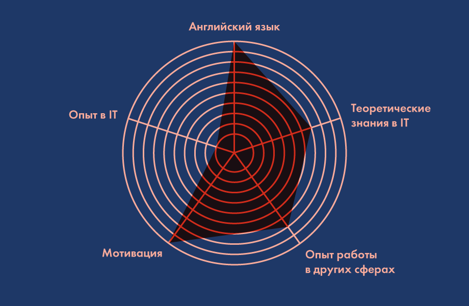

Как найти первую работу в IT: план действий для начинающих
Всем привет! Меня зовут Влад, и я около семи лет в IT. За это время видел множество компаний изнутри, прошел десятки собеседований, изучал нашу и западную карьерную специфики и менталитет.После множества комментариев и вопросов в личку по моей предыдущей статье об изучении .NET я понял, что начинающих специалистов больше всего интересует вопрос, как найти первую работу. Я буду говорить в основном о разработчиках, но эти советы пригодятся всем.При поиске первой работы мы встречаемся с проблемой курицы и яйца, ведь, как известно, везде требуются люди с опытом, а опыт можно получить на работе. Разрешить это противоречие можно, только создав такие условия, при которых работодателям будет выгодно вас нанять.В чем выгода работодателя? В том, чтобы нанять недооцененного человека, обладающего хорошей базой: теоретической, практической в другой сфере, языковой, мотивационной, интеллектуальной.
Можно это показать так:
Именно для нахождения недооцененных талантов и отсева всех остальных работодатели проводят IT-курсы/интернатуры/программы. Они инвестируют условную тысячу долларов в человека, чтобы со временем заработать на нем гораздо больше. К тому же сформировавшегося специалиста сложно переучить, да и он будет сопротивляться, а новичка можно обучить под себя. Инвестиция в интерна может очень хорошо окупиться через пару лет.
Как формируется цена работника
У интеллектуального труда нет себестоимости. Цена определяется исключительно рынком и осведомленностью работников о нем.
Факторы, влияющие на цену человека на рынке труда:
- общедоступная статистика;
- общение с друзьями/знакомыми/коллегами;
- собственный опыт торгов с работодателями;
- минимальные потребности человека;
- возможно, эксперимент по щупанью рынка — попытки продать себя по завышенной цене;
- налоговая нагрузка в регионе.
В целом на рынке труда соискатель может либо предложить свою цену, либо соглашается на цену, установленную работодателем. Для новичков более частый кейс, когда им предлагают какую-то цену, ввиду того, что Предложение > Спрос. Собственно, тренды этих цен и создают статистику. Если Спрос > Предложение на рынке, каждая новая сделка (найм) двигает статистику вверх. Если Предложение > Спрос, каждая сделка двигает статистику вниз. Очень созвучно с принципами биржевой торговли, только здесь больше хаоса. Например, по статистике DOU цена на джуниоров упала, потому что людей, желающих работать в IT, стало больше, чем мест. Цены коррелируют внутри замкнутой экосистемы (биржи), в данном случае — города.Соответственно, следующий уровень, который может колебать цену на рынке, — памп/дамп (искусственное завышение/занижение цены) активов через нагнетание в медиа информации, склоняющей людей к занижению или завышению своей цены. Например, Вася прочитал на DOU, что средняя зарплата джуниора — $1000, а он получает $400. Вася пошел просить больше и искать вакансию на $1000.Я описал общие тенденции ценообразования активов (людей), но какой актив хочет купить работодатель? Конечно, недооцененный! Если при выборе очень опытного специалиста часто вопрос цены стоит на последнем плане, в рамках разумного, ведь человека берут не под маржу, а под закрытие рисков, то новичок нужен именно для маржи и как можно более долгой.
Алгоритм поиска первой работы
Рынок труда в IT в целом несколько отличается от других рынков:
- Очень большое присутствие соискателей и компаний в интернете.
- Очень быстрое распространение информации о негативных и позитивных событиях.
- По многим специализациям спрос превышает предложение, исходя из чего, компании корректируют HR-политики и способы привлечения/мотивации сотрудников.
- Практически нет кумовщины, вам открыты все дороги даже без профильного образования, только бы вы смогли сделать работу нормально.
- Слишком быстрый рост зарплат, если сравнивать с другими сферами или даже c IT на Западе.
- Зарплаты значительно выше средних зарплат по региону.
В целом примерный алгоритм найма в IT-компанию я вижу так (можно абстрагироваться от IT и применить его к любой сфере, где: умение приносить результат важнее формальностей, инструментарий доступен всем для практики и есть открытый доступ к обучающим материалам):
Давайте разберем каждый пункт более детально.
Понять, какие есть направления работы
Могу порекомендовать хороший цикл статей на DOU — «Карьера в IT». Как выбрать направление, не имея опыта в IT? Думаю, можете искать что-то похожее на то, чем вы уже занимались. Например, перейти с позиции менеджера по продажам на позицию IT-сейлза или из менеджера проектов переквалифицироваться в IT-менеджера. Если вы только выпустились из университета и еще не имеете опыта, разберитесь, как устроен процесс разработки ПО, и, возможно, вам что-то приглянется. Но учтите, что в небольших компаниях вам вполне могут предложить смешанные позиции. Например, вы будете выполнять обязанности бизнес-аналитика и менеджера проектов или тестировщика и системного администратора. Это вполне нормальная практика.
Выбор специализации
Этот пункт наиболее актуален для разработчиков, поскольку есть множество технологий. Тут мы имеем палку о двух концах. Выбирая наиболее популярную технологию, вы конкурируете с бо́льшим количеством людей. Выбирая менее популярную, уменьшаете свои шансы найти работу. Можно попробовать сравнить статистику по Djinni, поставив фильтры «ваш город, страна», «меньше года опыта» и соответствующую технологию. Затем посмотреть количество вакансий, например, на DOU. Общее количество вакансий может быть косвенным показателем количества вакансий для новичков, есть определенная корреляция.
Я могу выделить такие факторы выбора технологии:
-
Привязка к месту жительства.
Если вы привязаны к определенному городу и не хотите переезжать — выясните:
- Сколько компаний используют эту технологию в вашем городе.
- Сколько компаний устраивают интернатуру и внутренние курсы по этой технологии.
- Какой средний уровень заработка по этой технологии в вашем регионе. Можете глянуть статистику на DOU. Правда, слишком маленькая выборка может быть нерепрезентативной. Необходимо общаться с представителями этого направления, которые уже работают достаточно давно и ориентируются в отрасли.
Если вы не привязаны к месту:
- В столице всегда больше зарплата и объемнее рынок труда, то есть найти работу будет проще.
- Возможно, в каком-то городе будет открываться интернатура/практика при компании — отличная возможность.
- Есть варианты удаленной практики/работы.
- Личный интерес. Если вам нравится делать конкретно UI или работать с базами, поищите работу в этом направлении.
- Опора на ваши уже развитые сильные стороны и навыки. Это может быть вполне хорошей базой для движения в новом направлении. Например, если в школе вы любили администрировать Linux, почему бы не стать DevOps?
- Простота входа. Чтобы разобраться в технологиях типа HTML, CSS, Wordpress, нужно куда меньше времени, чем на изучение Java или C# вместе со всеми фреймворками. Однако и потолок заработка будет не такой высокий, особенно если вы пойдете получать первую практику на фриланс. Но это может стать отличной точкой входа для дальнейшего развития.
- Возможность найти первую работу удаленно. Если у вас есть портфолио на GitHub, вы знаете английский, никто не мешает вам написать в любую веб-студию или IT-компанию в мире и предложить свои услуги. Но удаленщики без значительного опыта скорее будут работать с HTML, PHP, CMS, чем с языками, заточенными под Enterprise (промышленную разработку корпоративных решений) — C# или Java. Когда-то я помог другу с минимальным опытом в PHP найти работу в малазийской веб-студии на неплохой рейт, но он переоценил свои силы, и сработаться у них не получилось.
Понять, какие навыки необходимы
Достаточно очевидный и при этом очень неочевидный пункт. Например, вы хотите стать разработчиком мобильных приложений. Вам необходимо понять, из чего в целом состоит разработка мобильного приложения, какие используются языки, какие технологии есть, какие устарели, какие требуются на рынке труда. Понять это необходимо, чтобы результатом первой фазы обучения стало обычное работающие мобильное приложение, которое делает что-то простое. Тут вам может помочь человек, разбирающийся в теме. Самый первый критерий успеха в программировании — реализация согласно ТЗ (техзаданию), но часто бывает, что есть и второй критерий — более удачное ТЗ, составленное в процессе работы. Но это уже опытные специалисты могут ставить под сомнение ТЗ, чтобы не допустить глобальные ошибки клиента.
Соответственно, чтобы изучить, как построить приложение, необходимо:
- Изучить базовый синтаксис, IDE, методы фреймворков.
- Найти уже готовые приложения, выяснить, почему они построены именно так, сделать свое по образцу.
- Повторить это несколько раз в нескольких конфигурациях, чтобы научиться видеть потенциальные проблемы и нестыковки — это уже опыт.
Собственно, программирование — процесс сведения неизвестных задач к известным. В этом оно похоже на математику. Мы знаем методы библиотек и синтаксис, а как изначально в точности будет выглядеть программа — не знаем. Но мы это выводим. С разработкой в этом плане проще. А что делать бизнес-аналитикам или QA? Аналогично — выяснить, какие артефакты потребляет бизнес-аналитик на вход, что выдает в результате, и каков критерий успешности работы. Например, на вход — это информация, найденная в ходе общения с заказчиком, у которого есть задачи, которые решаются средствами IT. Результат — описать поведение некой системы: функциональные и нефункциональные требования, нарисовать макеты, которые решают задачу клиента. Критерии успеха: доступность и понятность для разработчиков, полнота описания поведения (спецификация) и как следствие — решение задачи клиента. Есть еще дополнительные: удачность выбранных решений с точки зрения экономии бюджетов заказчика, но это уже следующий уровень. Собственно, вам необходима литература о том, как выявлять потребность клиента, схематизировать (например, IDEF0), организовать UI, писать требования. Понимая, из чего состоит процесс работы, какие входные и выходные данные, вы на базовом уровне поймете, из чего состоит работа в выбранном направлении, будете видеть общую картину и понимать, куда движетесь. Это поможет сохранять мотивацию и концентрацию на обучении. А разобраться с этим вопросом проще всего, общаясь с людьми, у которых уже есть опыт.
Обучение
Если вы начинаете обучение с самых основ, возможно, вам будет лучше пойти на курсы. Как я писал в своей статье о развитии в .NET, рекомендую курсы на 3-6 месяцев, с постоянным контактом с экспертами, обратной связью. Трехдневные курсы вам ничего не дадут, а только разочаруют. Еще один способ — поиск ментора среди знакомых. Но соблюдайте главное правило: не навязывайтесь каждые пять минут с вопросами, записывайте вопросы и задавайте их в конце недели пачкой. Более чем уверен, что половина из них отпадет к концу недели. К тому же если гуглили больше часа и ничего не нашли, скорее всего, неправильно гуглили. Но есть и действительно, на первый взгляд, неочевидные моменты, которые человек с опытом объяснит вам быстро и понятно. Самый лучший метод научиться что-то делать — пытаться это сделать любой ценой. Если вы учитесь на разработчика, начинайте с реализации простых программ, типа змейки, тетриса, шахмат, на том языке, который учите. Сразу же у вас возникнут вопросы о структурах данных и ООП, и это будут хорошие вопросы. Но работодателю вы будете интересны, если сможете реализовать минимальный работающий продукт по своей специализации. Попробуйте поискать в интернете тестовые задания в разные компании. Думаю, именно такого рода поделки будут лучше всего. Поищите в Гугле «тестовое задание "вставить название вашей технологии". Также не забывайте выкладывать их на GitHub! Но об этом поговорим ниже.
Точки входа в первую работу
- Фриланс-биржи.
- Помощь знакомым, например, сделать сайт мебельного магазина мужу сестры.
- Знакомые фрилансеры могут отдать вам свой несложный заказ за небольшие деньги или вовсе бесплатно, но с условием, что укажут вам на ваши ошибки и дадут обратную связь.
- Участие в любых программах университета, помогающих устроиться на работу. Поговорите с людьми с кафедры, может, они подскажут.
- Стартапы или просто личные проекты людей, которые уже где-то работают. Больших бюджетов нет, но и требования к коду и знаниям там минимальны — лишь бы работало.
- Курсы IT-компаний, после которых возможно трудоустройство.
- IT-компании, набирающие людей на оплачиваемую/неоплачиваемую интернатуру.
- Удаленная, возможно, даже поначалу неоплачиваемая работа.
- Вход в смежную специализацию для набора опыта. Например, идете в manual QA, чтобы перейти в Automation.
- Случай довольно редкий, но, если вы хорошо ориентируетесь в какой-то сфере и можете заработать, решив чью-то проблему в вашей предметной области с помощью IT-средств. В худшем случае это опыт, который поможет в дальнейшем, в лучшем — деньги.
Главное правило для вас: лучше плохая работа сейчас, чем хорошая никогда. Любой опыт разработки для заказчика ценится гораздо больше, чем ваши личные поделки или теоретические знания.
Продвижение себя в инфопространстве
На старте очень важно дать всем знать о себе. Возможно, вам поможет даже случайность, и вас заметят.
-
Заполните социальные профили и четко укажите, что вы ищете:
- LinkedIn — в статусе можете написать «looking for a job», опишите, какие курсы прошли, где учились, работу какого направления ищите.
- Facebook — добавляйтесь в максимальное количество групп, связанных с вашей специализацией, отслеживайте сообщения о любых возможностях участвовать в чьем-то проекте или интернатуре.
- DOU — следите за анонсами интернатур — Junior дайджест, Календарь.
- Work.ua , AIN.ua — тоже лишним не будет залить сюда свое резюме или искать вакансии.
- Обязательно заведите на GitHub профиль со своими поделками.
- Создайте профиль на Djinni. Сумму поставьте не очень большую или вообще символическую, можете ориентироваться на те, что есть. Обязательно добавьте ссылку на GitHub, это выделит вас среди остальных.
- Дружите с рекрутерами, добавляйте всех подряд на LinkedIn, они вам еще пригодятся.
- Подпишитесь на рекрутерские группы на Facebook, типа такой.
- После того, как базово освоили выбранную технологию, связывайтесь с рекрутерами местных компаний и отправляйте им резюме, спрашивайте о возможностях для себя. Например, в компании, где я работаю — DataArt — есть интернатура, а также различные офлайн-школы — QA, .NET, алгоритмы в разных локациях. Это отличная возможность для старта.
- Занимайтесь нетворкингом, или, по-простому, проникните в тусовку. Ходите на все бесплатные события, знакомьтесь с людьми, спрашивайте совета. С советами опытных вы, возможно, куда быстрее, найдете того, кто вам поможет. Если пошли по пути фриланса, знакомьтесь с более опытными фрилансерами и предлагайте свои услуги.
- Узнавайте то, чего не знают другие. Например, одна компания в Днепре набирает интернов, но нигде не публикует эту информацию. Зная это, я посоветовал одному другу туда попробоваться, и его взяли.
- Можете воспользоваться услугами карьерного коучинга. В Украине есть компании, которые помогают переучиваться свитчерам (тем, кто хочет сменить работу на IT).
- Найдите в вашем вузе людей, которые как-то связаны с IT-компаниями. Спросите совета или как можно попасть к ним работать.
- Следите за сайтами с вакансиями. Там, бывает, проскакивают вакансии для людей без опыта. Даже если в вакансии требуется минимальный опыт, всегда можно пообщаться, ведь вакансия написана под идеального кандидата, и возьмут все равно того, кто лучше других или просто понравился. Либо вас могут посоветовать кому-то другому. В любом случае заранее никогда не знаешь, чего ожидать от общения и как это поможет в будущем.
- Напишите хорошее резюме. Хорошим оно считается тогда, когда говорит тому, кто вас нанимает, чем вы можете быть полезны и почему он должен нанять именно вас. С точки зрения оформления это должны быть привлекающие внимание смысловые блоки с выжимкой информации о вас как о специалисте — лаконично, по делу, без вранья. Можете прочитать хороший цикл статей по этой теме на DOU.
Напишите хорошее резюме. Хорошим оно считается тогда, когда говорит тому, кто вас нанимает, чем вы можете быть полезны и почему он должен нанять именно вас. С точки зрения оформления это должны быть привлекающие внимание смысловые блоки с выжимкой информации о вас как о специалисте — лаконично, по делу, без вранья. Можете прочитать хороший цикл статей по этой теме на DOU.
Собеседования
Скажу сразу — не ждите, что вас возьмут. И не расстраивайтесь от результатов. Будьте готовы к отказам — они развеют ваши иллюзии о самих себе и о рынке. В любом случае на собеседовании вы сможете:
- Попросить рекомендации — литературу и прочее.
- Узнать пару интересных ответов на вопросы о технологиях.
- Показать себя компании. Возможно, вам скажут прийти через пару месяцев, когда выучите это и это. И это будет очень хорошо.
На первую работу соглашайтесь на любых условиях, это ваш билет в развитие. Обучаясь дома месяцами, вы не сможете оценить глубину ваших навыков, знаний и получить реальный опыт. А вот начать работать чуть ли не за бесплатно и при этом развиваться — куда более быстрый путь. Возможно, на Западе это уместно, но в наших реалиях сформировался некий карго-культ вокруг HR-процессов найма и собеседований. HR задает неудобные вопросы, соискатель неудобно на них отвечает, и вроде бы все справились со своей работой. Часто на собеседованиях задают вопросы, о которых придумано немало шуток:
-
Кем вы видите себя через пять лет?
Думаю, вам надо разработать личную систему и понять, где вы действительно видите себя через пять лет. Если вы скажете, что история трудовых отношений с компанией, куда вы собеседуетесь, может продлиться и пять лет в случае найма, если ваши желания будут совпадать с возможностями компании, это вполне всех устроит.
-
Почему вы хотите работать именно в нашей компании?
Думаю, ваш ответ — «потому что это отличная возможность начать». Если у компании есть какие-то достижения, можете о них сказать. Это подкрепит веру в вашу будущую лояльность.
-
Опишите свои сильные стороны?
Вспомните свою успешную работу и скажите, благодаря чему она была выполнена. Вот вам и сильные стороны.
Немного о найме не только для начинающих
Часто собеседующие спрашивают о приоритетах человека в работе, что для него важно. В западной культуре ответ «деньги» не совсем приемлемый, потому что в любой профессии, если вы хороший специалист, ваши базовые потребности будут качественно закрыты, IT там не является сверхприбыльным относительно других профессий. В наших реалиях все немного иначе. Я разработал себе фреймворк для ответа на любые вопросы касательно найма. Это пирамида-список личных честных потребностей, я могу их обосновать. У каждого список может быть свой. Читается он снизу вверх.
Согласитесь, участие в революционном проекте, когда в офисе сломан туалет, коллеги-дебилы и задержана на месяц зарплата, не очень-то вдохновляет. Работаем мы, в конце концов, ради денег. Представьте: вы бы каждый день делали что-то интересное, развивались, но за спасибо? Это, возможно, круто, когда вы школьник, но для взрослого человека базис деловых отношений с работодателем — всегда деньги. При этом излишняя зацикленность на деньгах тоже вредит стабильности. Если вы часто будете менять работу, в следующие лидеры рынка вряд ли попадете. Сочтут, что вас слишком рискованно нанимать из-за частой смены работы. Ваши приоритеты могут отличаться от моих, и это нормально. Работодателей можно разделить условно на два лагеря: тех, которые готовы принимать честные ответы и признавать деньги мотивацией; и тех, кто могут поставить на вас клеймо «денежная мотивация» и не рассматривать и вовсе. Поэтому прежде чем идти в компанию, я бы рекомендовал разузнать о ней изнутри.
О деньгах
Расскажу, как это работает в аутсорс-компании. В продукте все может быть немного иначе из-за самой бизнес-модели. Работодатели пытаются избегать вопроса денег в корпоративной культуре, запрещают сотрудникам разговаривать о зарплатах. В этом есть разумное зерно: заплатить всем и много не получится, а если люди будут знать зарплаты друг друга, вполне возможны споры о несправедливости и т. п.Также чаще отталкиваются от пожеланий кандидата, ведь у каждой вакансии есть потолок. Возможны два варианта: кандидат называет сумму выше или ниже. В первом случае ему, скорее всего, откажут. Ведь дать человеку морковку меньше той, которую он представил, — значит лишить мотивации, и удачное сотрудничество не получится. Иногда могут накинуть сотню-две сверху, если это в рамках бюджета, — это обеспечит мотивацию и более результативную работу при небольших операционных потерях компании. То же самое с бонусами: компании платят бонусы, поощряя человека локально, чтобы нейтрализовать импульс требовать компенсацию выше. Если кандидат назвал сумму ниже, его добавят в пул активных кандидатов, из которых выберут самого лучшего по соотношению «цена-качество» либо по каким-то субъективным критериям. Если кандидат будет изначально знать потолок — захочет попросить больше, чем планировал изначально. А это все лишние операционные издержки, ведь система найма — часть бизнеса по оптимизации затрат, поэтому потолок обычно скрывают.